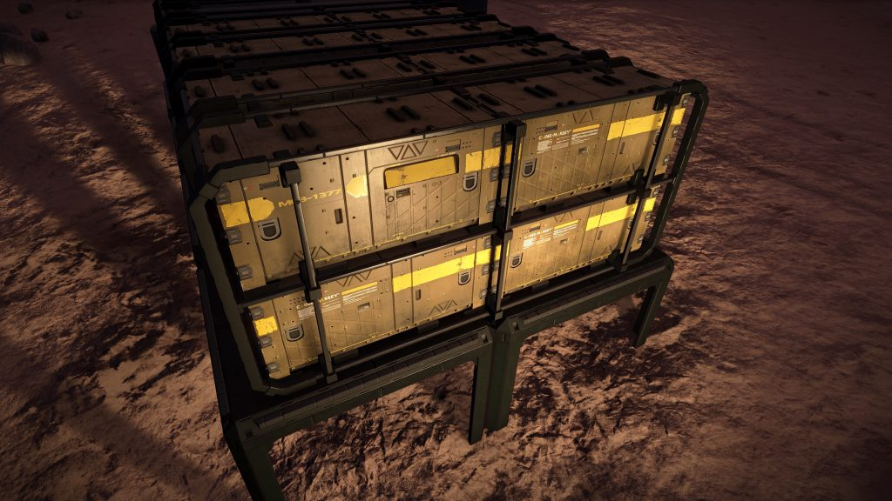

Orion’s Folly is an abandoned settlement in the Col 285 Sector UZ-O c6-9 system on body B 6, at -22.1285, 39.2771 (in Live/4.0) or at -87.0480, -10.6366 (in Legacy/3.8).
The location of this site can be found by following the three nearby listening posts located in:
Col 285 Sector GI-H b11-6 / Belispel / Pegasi Sector TT-X a2-2
SIGNAL DATA RECOVERED
[Note for 3.8] Codex displays values for 4.0, it should read: long:-10.590234
…Corrupted Transmission DAG-483-A Detected…
Matches signal detected at listening posts: (belispel, pegasi sector tt-x a2-2)
Approximate Signal Range: 38-40 LY
I have to do this. I have to complete our mission… long:39.2809 …here goes nothing.
…Signal Lost…
SIGNAL DATA RECOVERED
[Note for 3.8] Codex displays values for 4.0, it should read: lat:-87.05145
…Corrupted Transmission DAG-483-B Detected..
Matches signal detected at listening posts: (col 285 sector gi-h b11-6, pegasi sector tt-x a2-2)
Approximate Signal Range: 38-40 LY
I have to do this. I have to complete our mission… lat:-22.1322 …here goes nothing.
…Signal Corrupted…
SIGNAL DATA RECOVERED
…Corrupted Transmission DAG-483-C Detected…
Matches signal detected at listening posts: (col 285 sector gi-h b11-6, belispel)
Approximate Signal Range: 29-31 LY
I have to do this. l have to complete our mission… b 6 …here goes nothing.
…Carrier Signal Lost…
There are Engineer Materials scattered around the ground, and within the settlement there is a Data Point which may be scanned for an Intel Package, and for Engineer Data.
Around the settlement there are four Settlement Comms Log Uplink points, scanning them gives background to the reason for its abandonment:
MISSED TARGET 1/4
Personal Log:
We’ve missed our destination. I don’t know how. We didn’t miss by much, that’s the kicker. A few degrees that’s all, and we’re a few light years off course.
There’s no way to manually change course, the ship was designed to hit a pre-programmed target from our launch site. We were just passengers trying to hit a moving bullseye we had only seen on a vid screen.
Luckily we haven’t just been shot out into deep space, The ship’s systems have locked onto a nearby rock world. So this rock is now our new home instead of the lush Earth-like world we planned to land on. We knew what we had signed up for. We had one shot and we missed. It’s that simple.
MISSED TARGET 2/4
Personal Log:
I can’t sleep again. Going over things again and again in my head. I just can’t seem to switch off tonight. Duvell made a comment years ago that I just can’t shake out of my head. It was about allocating resources to launch the ship and trying to reach our original destination.
It seemed like wishful thinking at the time, but now… I don’t know.
I’ve spent years looking up at the planet we were meant to land on, we were never meant to be on this rock and it taunts me every day.
No one can imagine the frustration of waking up every day and seeing that distant blue ball in the sky, hanging there as monument to our screw up.
If there is a way we can get back out there, reprogramme the ship with a new destination, repair it and find some way to refuel it. This could take years, if it can even be done. But surely we have to try.
MISSED TARGET 3/4
Personal Log:
Did I say years? I should have said decades. The naivety of this whole venture is colossal.
I knew it wouldn’t be simple, but as the years have gone on it’s becoming harder and harder to stay focused. Especially when you lose people. Duvell, Waite, Evans, all gone now. I’m the only one left.
I’m close to the end, I can feel it, but it’s so hard to go on.
MISSED TARGET 4/4
Personal Log:
Launch Day. I never really thought I’d get it finished, but now I’m here I find myself full of excitement, but also fear and doubt.
Not everything went as planned. I have enough fuel to launch and break orbit but that’s all, once I’m out in the black I have one engine burn to push me on my way, and then it’s all up to luck and the course re-programming.
But I have to do this. I have to complete our mission for my team, for myself. I can’t just sit here and die knowing that we got so close, but never made it.
So here goes nothing. T Minus 10 and counting.
While some have been quick to jump to the conclusion that the settlement is from one of the Generation Ships for which tracking had been lost; others suggest a more recent expedition, making reference to the relatively up-to-date structures, the apparent small four person team referenced in the log, and to the supplies from FTL-era companies such as Caine-Massey that can be found within the settlement.
